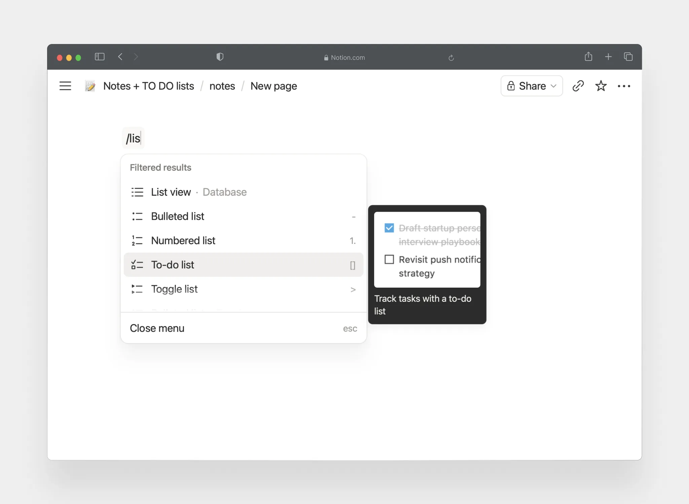
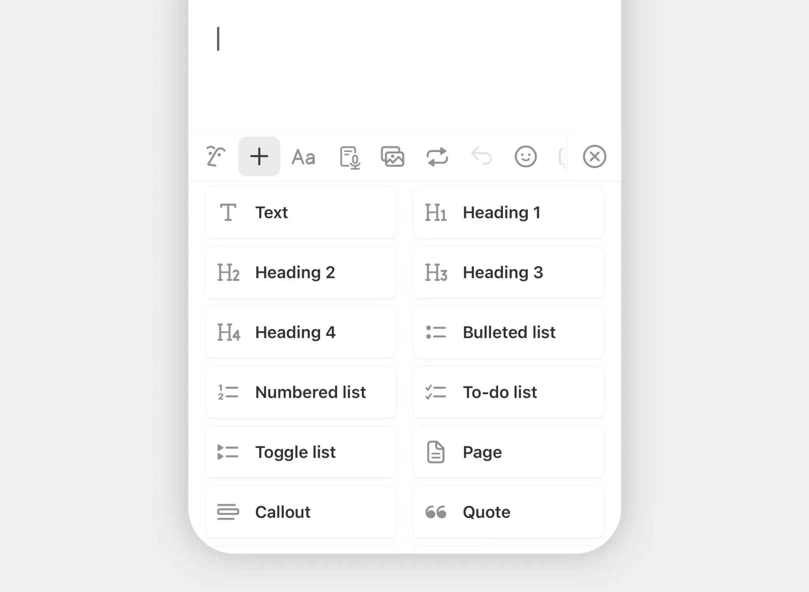
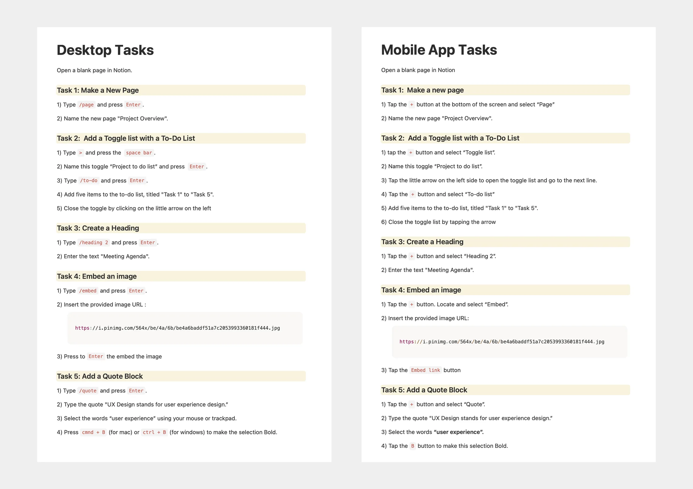
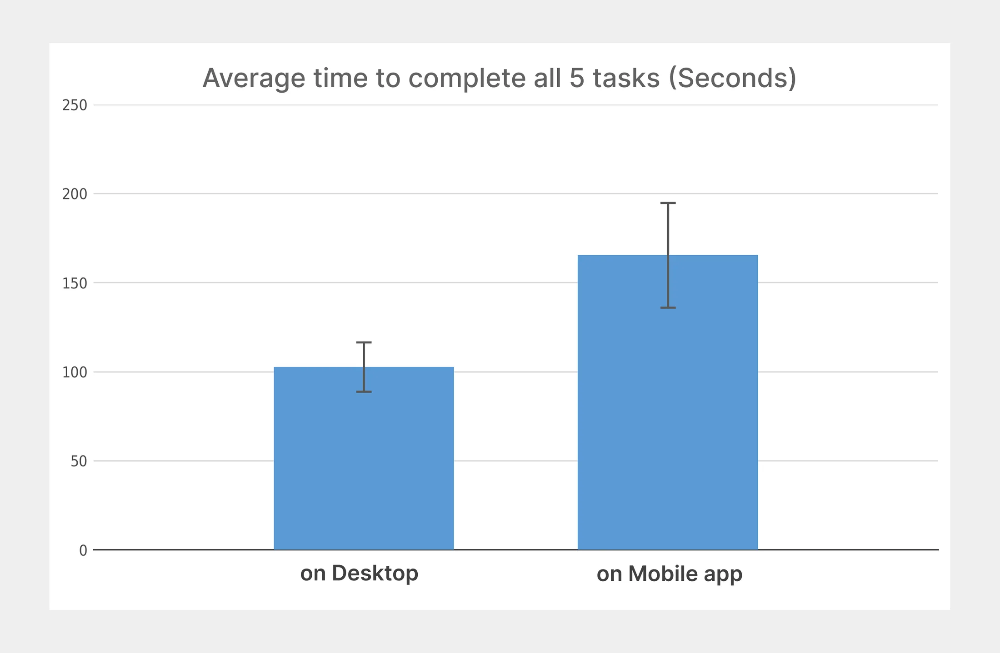
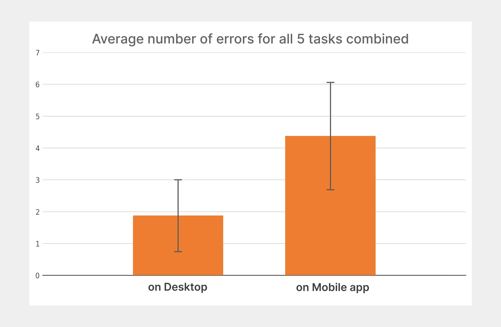
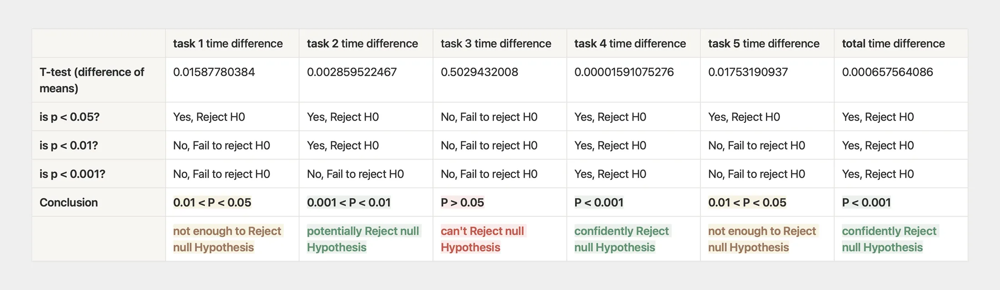
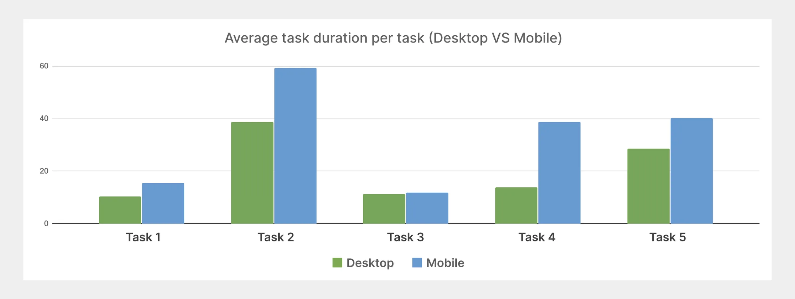

Should Notion add shortcut commands to mobile? A controlled experiment.
I ran a controlled experiment to find out whether Notion's keyboard shortcuts actually give desktop users a measurable efficiency advantage over mobile, and whether it's worth considering adding such shortcuts to the mobile version of the platform.
Desktop's shortcut commands vs. mobile's tap-through menu.
Context
Notion's mobile app lacks the valuable keyboard shortcuts available on desktop and web.
Notion is a workspace for writing documents, organizing information, and managing projects. On desktop and web, users can type “/” followed by a keyword (/page, /todo, /quote) to quickly create or format content.
This is a beloved feature among the more experienced users of the platform as it increases their efficiency. However, on mobile, such shortcuts are unavailable, so users must open the “+” menu and scroll through a long list of options instead.


Research Question
Does using keyboard slash commands allow users to complete tasks faster than navigating Notion's mobile interface?
The Mission
To test whether slash (/) commands measurably improve efficiency, and whether adding them to Notion's mobile app is worth it.
Designing the study
Comparing two workflows in a controlled experiment
The study compared two ways of creating and formatting content: keyboard slash commands on desktop and UI controls on mobile. For each condition, task completion time and number of errors made were measured as dependent variables.
Condition A
Using keyboard slash commands on Desktop
Measured:
task completion time + number of errors
Condition B
Using UI menus & gestures on Mobile
Measured:
task completion time + number of errors
I chose a within-subjects quantitative controlled experiment to test whether the input method changes task efficiency. To prove my hypothesis, I had to find proof for rejecting the opposite of the hypothesis, which is called a null hypothesis. The null hypothesis provides the baseline for the statistical test: if the observed difference is unlikely to have occurred by chance, the null hypothesis can be rejected.
The Structure of the Study
Pre-test questionnaire
Established each participant's baseline familiarity with Notion and its keyboard shortcuts.
Controlled task session
Participants performed the same five tasks under both conditions while screen sharing.
Post-test questionnaire
Captured each participant's subjective preferences and reflections after the experiment.
Participants
8 Notion users, recruited for prior experience
The study involved 8 participants who used Notion in their day-to-day life and didn't need to be onboarded on its functionality. They also self-reported to be comfortable working with both keyboards and touchscreens.
87.5%
Used desktop as their primary platform.
75%
Were not familiar with slash commands despite regular Notion use.
100%
Reported using Notion for note taking, productivity, and document keeping.
Controls
Controlling for potential sources of bias
Choosing the right participants
All recruited participants were familiar with Notion. This was important because shortcuts are usually not targeted towards novice users.
Standardized instructions
All participants received identical instruction sheets containing 5 tasks, ensuring the same exact steps were performed across both conditions.
Reference guide provided
Participants were provided with a visual guide to keyboard slash commands and mobile UI controls to account for lack of prior shortcut knowledge.
Counterbalancing Platform Order
Half of the participants started with mobile as their beginning platform, and the other half with desktop. This was done to reduce practice and fatigue bias.
Defining and tracking errors
Typos, mis-clicks, and incorrect outputs were recorded as errors to account for time wasted. Slow typing or time spent thinking were not considered errors.
Within subjects design
Every participant completed both conditions and acted as their own control to account for individual differences in typing speed and dexterity.
Choosing the right tasks
5 tasks, varying in complexity and mode-switching demand
The instructed tasks in the study were designed to mirror how participants used Notion on a daily basis. The tasks were designed to have different complexities in order to produce more insightful data regarding the impact of input methods on task completion speed.
Make a new page Low complexity
Create a new page and give it a name.
Build a nested to-do list High complexity
Create a toggle, add a to-do list, then add five items.
Create a heading Low complexity
Create a Heading 2 and add “Meeting Agenda.”
Embed an image from a URL High complexity
Create an embed using the provided URL.
Create a bold quote block Med complexity
Create a quote block, enter text, select it, and apply bold.

Results
Using slash commands on desktop was faster and less error-prone across all 5 tasks.
The average time it took to perform each task was always slower on mobile. Similarly, participants produced more than twice as many errors on mobile compared to desktop. This matters because errors can create additional completion time. A participant who mis-taps or enters the wrong content has to spend extra time recovering.
Total time to complete all 5 tasks
DESKTOP
102.6s avg
MOBILE
165.5s avg
Standard deviation was tighter on desktop (13.8 vs. 29.4) — meaning mobile performance wasn't just slower, it was far more inconsistent across participants.
Total errors across all 5 tasks
DESKTOP
1.9avg errors
MOBILE
4.4avg errors
Mobile produced more than double the errors on average. This is a confound I address directly in the Limitations section.


Statistical validation
The observed difference was statistically significant.
With only 8 people, a faster average on desktop could just mean I happened to recruit 8 fast typists. To rule that out, I ran a paired two-tailed T-test — a standard check that asks, “how likely is it that the observed difference happened by chance?” If the calculated P-value is below 0.001, then there is 0.1% or less chance that the observed difference was due to chance or randomness, and as a result, the null hypothesis can be rejected to provide evidence for the alternative hypothesis.
Task time — T-test result
P = 0.000657
Below 0.001. Meaning there is a 0.1% or less probability this difference is due to chance. Null hypothesis confidently rejected.
Error rate — T-test result
P = 0.000589
Also below 0.001. Slash commands were associated with significantly fewer errors too, although this wasn't the primary hypothesis.

Data Interpretation
The difference is the most significant for complex tasks.
Looking at individual tasks revealed a more useful pattern. The strongest differences appeared when tasks involved multiple steps or mode switching. This suggests the advantage of slash commands scales with task complexity, rather than being a flat speed bonus.

| Task | Complexity | Observation |
|---|---|---|
| Task 1 — Creating a new page | Low complexity | Not enough difference |
| Task 2 — Building a nested to-do list | High complexity | Significant difference ✓ |
| Task 3 — Creating a heading | Low complexity | No significant difference |
| Task 4 — Embedding an image | High complexity | Significant difference ✓ |
| Task 5 — Formatting a quote | Med complexity | Not enough difference |
Tasks 1 and 3, which were the simplest, had the smallest time difference gap. The largest gap appeared in Task 4, which involved embedding an image. For this task, users had to switch apps on their phone in order to copy the image link and paste it into Notion. They also made quite a few mistakes while doing so, which explains why this task had the longest duration.
Task 4 userflow on desktop
Type /img to open embed
Copy link from instruction sheet
Paste link into embed box and press enter
Task 4 userflow on mobile
Select embed option from the + menu
Switch to external app to copy the image link
Switch back to working Notion page
Paste the link and tap embed
Key insight
The value of continuous and uninterrupted input increases as the task becomes more complex and interaction-heavy.
What participants said
The data matched how participants felt
The quantitative results matched what participants reported after the experiment.
100%
Said desktop platform felt more efficient
100%
Said keyboard commands were more efficient
87.5%
Found keyboard commands more comfortable/intuitive
50%
Expressed a desire for slash commands on mobile
It's a lot easier to stick to typing rather than switch between keyboard and mouse and buttons and taps.
On staying in one mode
UI buttons are more intuitive as you can explore them on your own. But since I was told which keyboard commands to use, using them was easy and made tasks faster.
On discoverability vs speed
The hierarchy of the UI buttons is bad and there is no search button to quickly find the command I'm looking for.
On inefficiency of the mobile UI
I imagine once you learn to use slash commands on desktop, using them on mobile would feel intuitive.
On translation of slash commands to mobile
Limitations
Input speed and error rate were linked
The perceived efficiency of the desktop platform could be due to the lower number of errors on desktop rather than the pure efficiency of the slash commands on desktop. However, I do not have enough data to support or deny this potential impact.
Both platform and input method were variable
This study had two changing variables: platform type and input type. A cleaner experiment would keep the platform constant and only change input types. Due to time constraints, a mobile prototype for testing slash commands couldn't be built.
User behavior outside of controlled experiments
This study didn't reflect how people use Notion shortcuts in daily workflows. Users may use a combination of keyboard shortcuts, mouse inputs, UI buttons, etc. Such mixed input patterns can't be used in a controlled study.
Recommendations
So should Notion bring slash commands to mobile?
Not yet. But the result points to a problem worth solving.
The value of slash commands isn't the “/” itself. It's the ability to create and format content without having to switch input modes. This is especially important as many of Notion's functionalities involve typing. A mobile equivalent doesn't need to necessarily follow slash command, it just needs to cut how often users pause to navigate a menu. The question is what that looks like on the mobile platform.
Recommended next steps
Test both input methods on mobile.
Conduct a follow-up study that tests input methods on mobile only, comparing a test prototype using slash commands on mobile vs. the existing “+” menu to isolate input methods from platforms.
Recruit a larger, more mobile-first sample.
I recommend recruiting a larger sample group who have more mobile-first experience, ensuring the group includes participants with varying backgrounds, motor abilities, and age ranges.
Reflection
A good experiment is built around what could make the result wrong.
The most valuable lesson wasn't a finding about Notion. It was understanding how much a study's design shapes its results and conclusions.
The many controls I considered did help with reducing different sources of bias. But the results revealed a limitation I hadn't fully isolated: by comparing desktop and mobile, I couldn't cleanly separate the effect of platform from the effect of input method.
Rather than treating a statistically significant result as the end of the research, I learned to ask what the experiment still couldn't tell me, and what the next study would need to isolate.